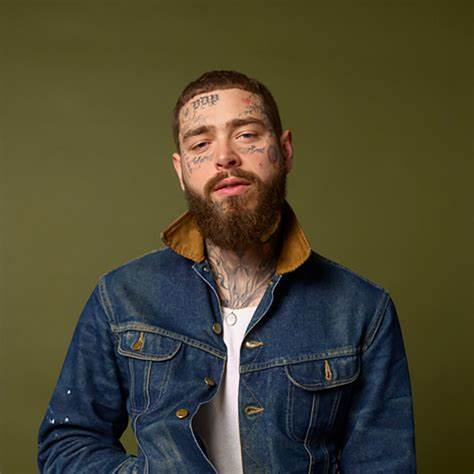

Post Malone
"You just go with the flow because life is just all about how you feel." - Post Malone.
Click here to VIBE!All about Posty
Austin Richard Post. A.K.A "Post Malone"
Born on July 4, 1995 as Austin Richard Post in Syracuse, New York, the soon-to-be rapper, singer, and songwriter was exposed to music early on. His father, Rich Post, used to be a DJ and so had his son listen to all kinds of music genres, such as hip hop, country, and rock.

He claimed that his stage name, Post Malone, was chosen sometime when he was 14 or 15. When he dropped out of college, Post and a few of his friends including game streamer Jason Probst, moved to Los Angeles. This would prove to be serendipitous because that’s where he would meet some of the big names that would help launch his career.
In 2015, after meeting record producers FKi 1st and Sauce Lord Rich, Post would record the single ‘White Iverson’. The song alludes to basketball player Allen Iverson, but also has themes about fame and working hard. It was uploaded to Post’s SoundCloud in February 2015, and a YouTube music video followed in July of the same year.
Soon after, it gained one million views and was also praised by Mac Miller and Wiz Khalifa. Of course, not everyone loved his music. However, his online fame would later catch the attention of record labels, and propel him to the limelight.